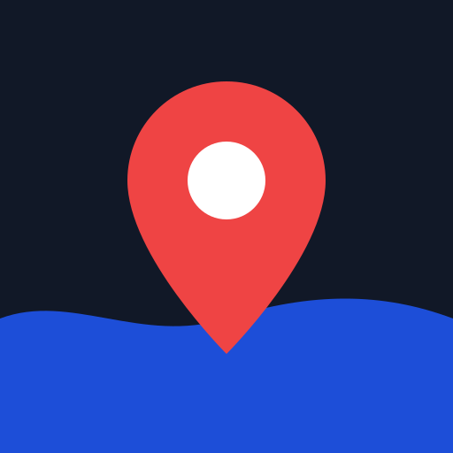

Когато номерът го няма в картата, приложението пита Google автоматично. Нужен е безплатен ключ (10 000 търсения/месец без такса).
Адреси, които сте запазили с 📌. Винаги излизат първи и като точни.
Данни: © сътрудници на OpenStreetMap (ODbL). Търсенето работи без интернет след първото изтегляне. Картата се пази в паметта за зоните, които сте разглеждали.

Еднократно, ~5–10 MB. След това търсенето работи и без интернет.